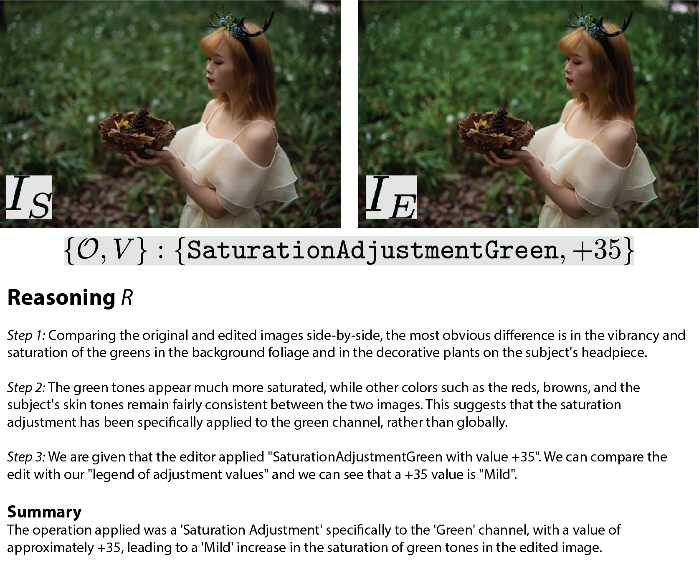
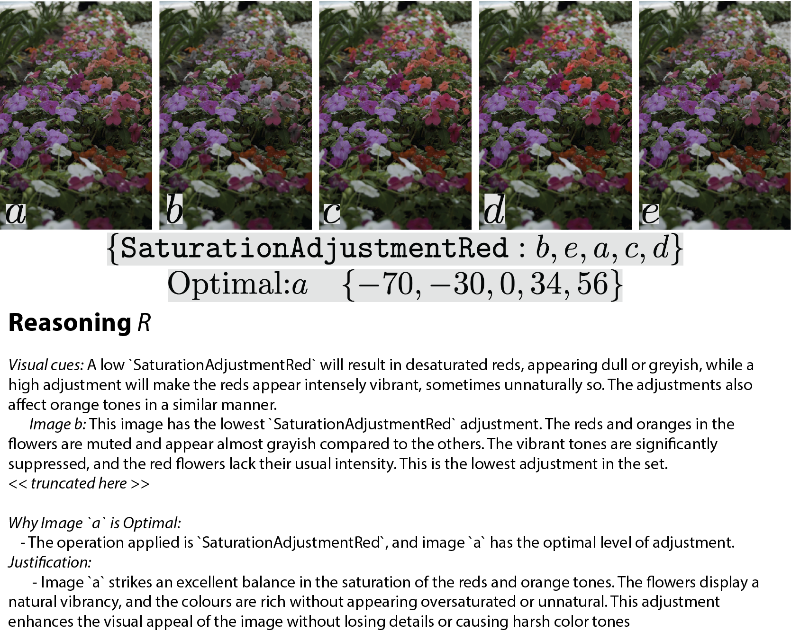
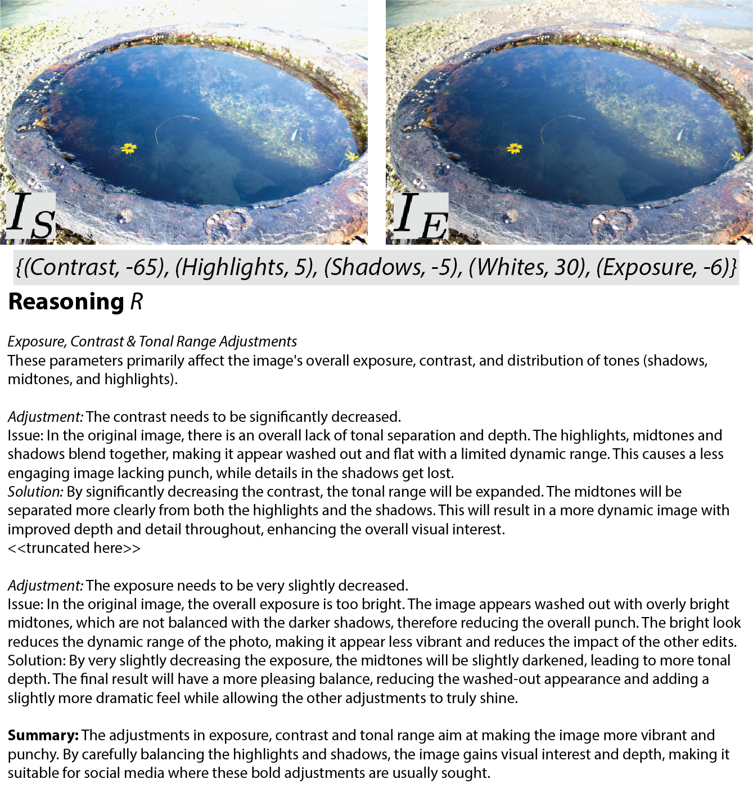
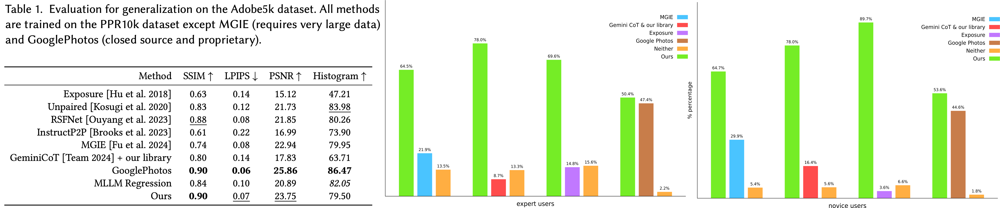
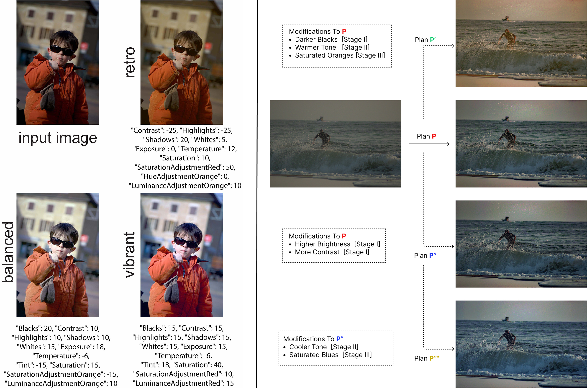

MonetGPT is an image operation-aware multimodal large language model (MLLM), that provides automatic suggestions for image retouching.
Given a photograph (left), MonetGPT analyzes it to identify a set of issues and possible adjustments to fix them. The solution steps are then translated to a set
of procedural operations, along with respective parameter settings, drawing from a given library of operations, which occurs in three stages.
Abstract
Retouching is an essential task in post-manipulation of raw photographs.
Generative editing, guided by text or stokes, provides a new tool accessible
to users but can easily change the identity of the original objects in unaccept-
able and unpredictable ways. In contrast, although traditional procedural
edits, as commonly supported by photoediting tools (e.g., Gimp, Lightroom),
are conservative, they are still preferred by professionals. Unfortunately,
pro-quality retouching involves a multitude of individual procedural editing
operations and are difficult to plan for most novices. In this paper, we ask if a
multimodal large language model (MLLM) can be taught to critique raw pho-
tographs, suggest suitable remedies, and finally realize them with a given set
of pre-authored procedural image operations. We demonstrate that MLLMs
can be first made aware of the underlying image processing operations,
by training them to solve specially-designed visual puzzles. Subsequently,
such an operation-aware MLLM can both plan and execute edit sequences.
To facilitate training, given a set of expert edited photos, we synthesize a
reasoning dataset by procedurally manipulating the expert edits. We use
this dataset to ground the LLM on the visual adjustments. The proposed
retouching operations are, by construction, understandable by the users,
preserve object details and resolution, and can be optionally overridden. We
evaluate our setup on a variety of test examples and show advantages, in
terms of explainability and identity preservation, over existing generative
and other procedural alternatives. Code and models will be released upon
acceptance.
Overview
MonetGPT is a novel framework that leverages MLLMs for advanced reasoning to facilitate procedural image retouching. Pretrained MLLMs lack the domain knowledge required to comprehend underlying image retouching operations and their associated
adjustment values. To address this limitation, we design a set of
puzzles specifically targeted at bridging these knowledge gaps. We
discover that by solving these puzzles, the MLLM can become an
agent with expert-level domain knowledge, capable of retouching
images effectively. Once trained, the MLLM can critique photographs, propose fixes,
and suggest sequences of retouching operations with corresponding parameters. These suggestions can then be translated into executable calls using our function library of adjustment operations.
Our framework operates in three stages where it makes adjustments targeted at (i) Lighting, (ii) Saturation and White Balance, and (iii) Selective Color Adjustments. After each stage, the intermediate retouched image is fed back to the MLLM to generate a plan for the next stage. The GIF below shows an intermediate resultc after applying an operation using our procedural library.
Injecting domain knowledge into MLLMs via visual puzzles
We construct our puzzles using expert-edited images as the target edits; source images are then generated by applying operations from our library, guided by the assumption that modifications to an expert-edited image generally yield a less optimal result. A key recipe in our puzzles is using a pretrained MLLM to additionally generate a reasoning solution corresponding to each puzzle, rather than merely predicting the adjustments, and leveraging this as a pathway to regress the final adjustment values. While MLLMs may struggle to directly predict adjustments, we find they excel at explaining the impact of these adjustments when the ground truth is provided (i.e., the actual operations, values, and before/after images for visual differences). This allows us to leverage pretrained MLLMs to reason about each edit operation by explaining why a particular operation was used and what problem it fixes by grounding it on the actual adjustments and linking this reasoning to the visual changes to prevent hallucination. We use this to build a dataset to fine-tune an MLLM to acquire this reasoning when the actual adjustments are not supplied.
Puzzle A: Gaining Understanding of Individual Operations
The first puzzle focuses on teaching the MLLM to visually comprehend the effect of specific image retouching operations and their corresponding adjustment levels. This is achieved by first applying a randomly selected operation O with an associated adjustment value V from a predefined library to a source image IS, resulting in an edited image IE. We then query a pretrained MLLM with the ground truth operation and value allows it to generate detailed textual reasoning R that accurately explains how (O,V) transforms IS into IE. This elicited reasoning is then leveraged in a supervised training phase to enable the MLLM to identify the operation O and regress the adjustment value V (without the ground truth) along with reasoning. By prompting the MLLM to articulate the visual changes, it learns to encode these nuanced visual effects within its textual representation.

Puzzle B: Understanding Image Aesthetics
The second puzzle teaches the MLLM to recognize optimal image quality. It involves presenting the MLLM with an ideal expert-edited image alongside several randomly adjusted versions of it. The MLLM's task is to first arrange all these images based on the strength of the applied adjustment. Then, it must identify the optimal image from the set, explaining its choice, and also determine the necessary correction to transform one of the adjusted versions back to the ideal state. By solving this, the MLLM learns the visual qualities of an optimally adjusted image and how to estimate the required changes to reach that state, which is vital for complex editing tasks.

Puzzle C: Generating a Plan for Image Retouching
MLLMs typically struggle with the abstract and subjective nature of image retouching, finding it hard to devise comprehensive editing plans with multiple, precise adjustments. To bridge this gap, our third puzzle trains the MLLM to transform a lower-quality source image into an expertly retouched version by predicting a sequence of suitable operations and their exact values. We programmatically generate these lower-quality source images from expert images by applying a sequence of adjustments, assuming that reversing these adjustments restores the expert-edited image. This reversed sequence forms the target plan. As in previous puzzles, we then query a pretrained MLLM to justify each operation and value by grounding it on the actual adjustments and linking it to visual changes in both the images.
For each proposed step, the MLLM learns to generate a structured reasoning triplet, detailing the Adjustment (operation and its degree), the visual Issue being addressed, and the proposed Solution. During training, using only the source image, the MLLM must output the complete plan to reach the expert target. A critical skill the MLLM also develops is recognizing when no further edits are needed for a particular stage, thereby preventing unnecessary alterations.

For more details refer to our paper.
Evaluation
We quantitaively evaluate our method on the Adobe5k dataset as well as conduct user studies by expert and novice users as quantitaive evaluations do not fully capture the subjective nature of image enhancement. Our evaluations show that MonetGPT outperforms open-source alternatives and performs comparably to Google Photos AutoEnhance (a closed-source solution).

Results
Toggle among various methods to compare them with ours side-by-side. MonetGPT provides detailed explanations for its generated plans.
Personalized Editing
[Left image]: MonetGPT's inherent flexibility—enabled by combining MLLMs with a procedural design—allows it to generalize effectively to diverse stylistic requests specified by users via natural-language (e.g., requesting increased vibrancy or softer tones), making the model adaptable to individual preferences. Our framework can produce different edit plans based on style tags, here we show retro, balanced, and vibrant producing different edit plans, resulting different retouched results.
[Right image] The autoregressive nature of MLLMs, combined with our staged editing pipeline, allows the user to edit the plan (P) at any stage. The refined plan is used to determine subsequent parameter values. Moreover, the edited plan P' enables the MLLM to generate plans for subsequent stages that are consistent with the edits. The right-bottom image (P''*) shows a result following further modifications to the second and
third stages,after the first stage was modified to generate P".

Acknowledgements:
We thank Rishabh Kabra, Ruchira Ray, Tobias Ritschel, Chen Liu, Sylvain Paris, and Morten Hannemose for their comments and suggestions. Niloy was supported by gifts from Adobe and UCL AI
Centre.